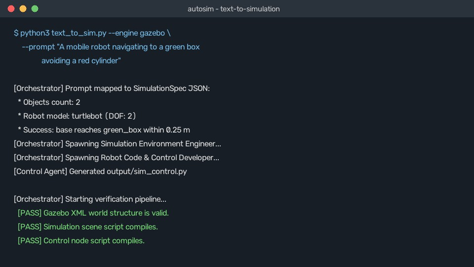

Setting up a robot simulation usually means hand-writing world files, robot descriptions, launch files and a controller before any testing can start. Autosim generates all of them from a natural-language task, for example "a mobile robot navigating to a green box avoiding a red cylinder".
An LLM parses the prompt into a typed simulation specification (objects and poses, robot model and degrees of freedom, success criteria), validated with Pydantic. An orchestrator then hands the spec to two agents: a scene agent that writes the Gazebo world, URDF and ROS 2 launch file (or an Isaac Sim script), and a control agent that writes the ROS 2 controller node. Before launch, a verification step checks the world XML and compiles every generated script. When no LLM is available, rule-based fallbacks keep the pipeline running.